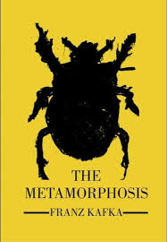
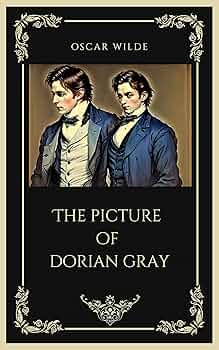
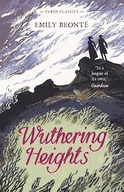

Top books

METAMORPHOSIS
by franz kafka
The Metamorphosis (1915) is a seminal modernist novella by Franz Kafka that explores themes of alienation, identity, and the fragility of human connection
Read More

Da Vinci Code
by Dan Brown
The story follows Harvard symbologist Robert Langdon after he is summoned to the Louvre Museum in Paris following the bizarre murder of its curator, Jacques Saunière.
Read More
.jpg)
Gone Girl
by gillian flynn
Gone Girl is a psychological thriller that begins on the fifth wedding anniversary of Nick and Amy Dunne, when Amy suddenly vanishes from their Missouri home. .
Read More
THE Picture Of Dorians Grey
by Oscar Wilde
The Picture of Dorian Gray by Oscar Wilde tells the story of Dorian Gray, a young man who stays forever young while his portrait ages and reflects his sins.
Read More.jpg )
To kill a mockingbird
by Harper Lee
This novel tells the story of a young girl, Scout, growing up in the American South. Her father, Atticus Finch, is a lawyer who defends a Black man wrongly accused of a crime.
Read More
THE Bell Jar
by Sylvia Plath
This novel tells the story of Esther Greenwood, a young woman struggling with pressure and expectations. She experiences emotional challenges while trying to understand herself and find her place in society.
Read More
Wuthering Heights
by Emily Brontë
This novel tells the story of Heathcliff and Catherine whose powerful love turns into jealousy and revenge. Set on the English moors it explores passion, obsession and tragedy across many years.
Read More


.jpg)


.jpg)
.jpg)


.webp)